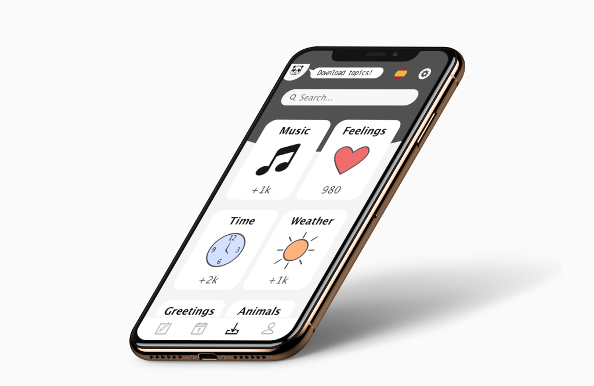
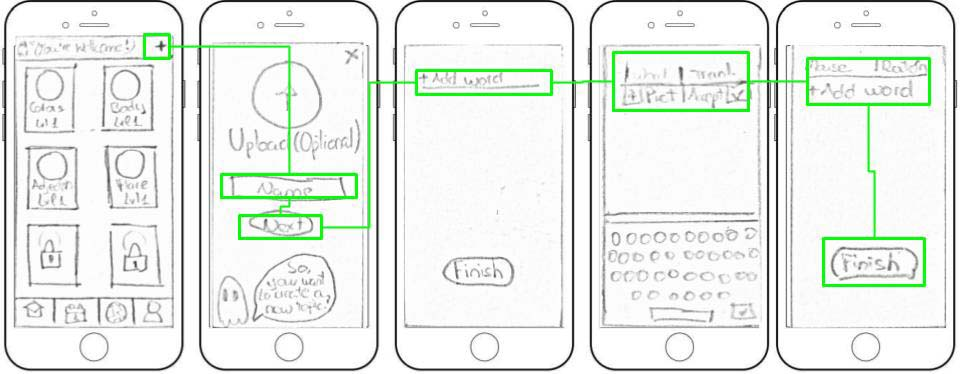
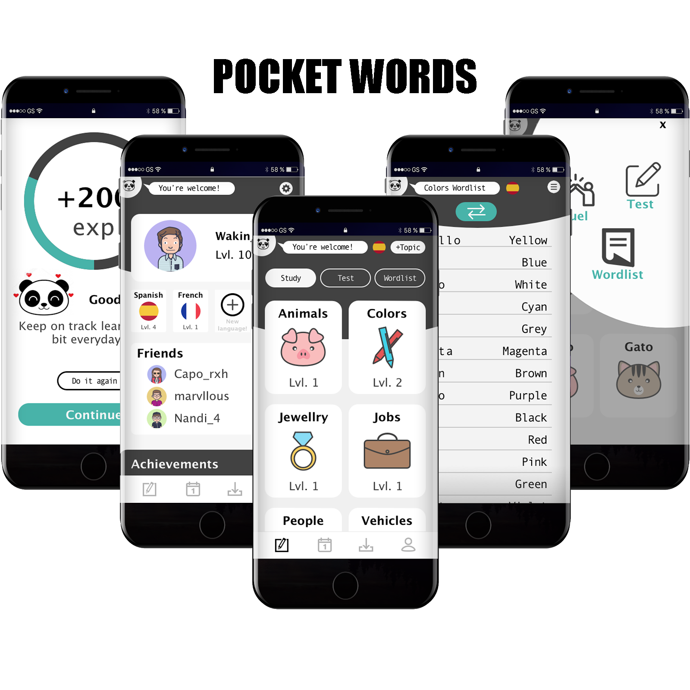

Pocket Words
Along this project I aimed to create a unique experience for users wanting to learn the vocabulary they most like to.

What did I?
Market analysis
Audience content
Site Mapping
Wireframing
Prototyping
Testing
Overview
‘PocketWords’ is a funny and enjoyable vocabulary mobile application for everyone who wants to improve their vocabulary in other languages at their own rhythm and flow. No pressure, just adapt it to your own needs!
People, specially teenagers and young adults, lack of enough time to study a new language, but have the desire to do so, seeing the necessity to improve primarily their vocabulary to be able to express themselves better, so I was asked to develop an app focusing on this idea for this target audience.
Objective
The aim of this project was to create short exercises of vocabulary to make everyone able to study at their own path and also the possibility of creating their own ‘decks’ of vocabulary, so they can study just what they want. With this idea also came the possibility of downloading and management decks from other users, so it made the app more useful for everyone.
Exploration Phase
Competitors Analysis
Once I have clear what I was asked to do, I started my research on competitors to know more information about how they handle the problem and what could be improved. I carried out an analysis focusing on different points:
- Competitor profile.
- Knowing their target audience and marketing strategy.
- UX/UI analysis: navigation structure, usability, content…
Key points
The most important apps in the market that I found were ‘+Babble’, ‘Duolingo’ and ‘Learn Languages’. They provided me with an insight into the structure and content most important for users.
Competitors strengths: a high variety of content, good navigation structure, follow-up progress.
Competitors weakness: not a way to search, not showing the correct answer when you fail, just learn mode.
Understand the User
User Interviews and Personas
After knowing what the competitors were doing and finding their weakness, which made me able to translate them into opportunities for the app, I searched for some people to conduct an interview and also did some surveys. The questions and study were focused on knowing their daily routine, their needs, goals, and if they have ever used a vocabulary app and why they liked or not it.
Key insights:
- Make a fun interactive way of learning.
- Show progress is a must.
- Interviewees found interesting the idea of creating a community.
- Create your own vocabulary list.
Ideation Phase
Information Architecture & Card Sorting
Taking into consideration the results obtained from the interviews and surveys, I created a list of content and features based on personas’ goals. After listing all the possibilities, I categorized them and created a first attempt on the site map. But this wasn’t everything, before finalizing the site map, I also conducted a closed card sorting study to know how people think the app would be best categorized.
To do the card sorting I used optimal workshop website. Some of the tests also were made in person using this website, so after the test, I could ask some questions to understand better how the tester rationalized the answers.To do the card sorting I used optimal workshop website. Some of the tests also were made in person using this website, so after the test, I could ask some questions to understand better how the tester rationalized the answers.
After analyzing the results from ten participants, I updated the site map. This is the final result simplified.
Sketching (Low-Fi Wireframes)
When I had clear how many screens the app was going to have and how they were connected to each other, I started sketching all of them.
Sketching helps to work rapidly and consider more ideas, being able to test them fast without focusing on details.
User Flow sketches
After reviewing these ideas I decided to create a user flow for each of the core features of the app and create more detailed wireframes for those.
One of them was creating a new topic with new words and this is the user flow for this:
Mid Fidelity Wireframes
Based on my initial sketches, and corrections, I created mid-fidelity wireframes for the app, to develop them in better depth and check if everything worked right taking in consideration elements such as spacing, patterns, typography…
Creation Phase
Usability Testing
Before continuing, I created a simple prototype to test by myself how intuitive the app was, did the changes necessary and after that, I conducted some usability tests with 6 people from my target audience. I asked the testers to do 3 different actions from the core features. During the test, I observed users actions and asked them to think aloud as much as possible, so I could take notes on everything they noticed, good and bad things.
One of the issues that came up during the tests was that people didn’t know how to get to a test or review words, as all these options were hidden together in an option button in study mode screen. To solve this problem, I eliminated that button and added it to the ‘selection topic’ screen, but after a few tries, I realized, I could still let the first button were it was, so people can access to those options even when they are on another mode. Now, this process is much faster and easier to understand. Also, I updated the site map due to the changes made.

I continued doing more tests and updating the app, until I got a polished design.
User Interface
Final Showcase
The final project resulted in a mobile phone videogame to learn vocabulary, where you can use your own vocabulary, download wordlists from other users or use the topics provided by the app. The game is simple, you’re given a word (written and/or audio) and four possible solutions. Other times you’ll have to write a sentence with the words given or select matching words. The study mode ends when you complete 10 requests successfully.
An0 experience system has been implemented to maintain the users’ activity and made them want to go back to the app and improve. Also, the possibility of defying your friends or a random opponent offers a more complete experience. There’s still another method to ensure users see their progress, the achievement system, in which they will be able to unlock ‘trophies’ which can be seen by anyone.
The app has a panda called ‘Pocky’ as its pet as a way of making an approach to users and giving a personality to the app. Pocky will have a friendly way of talking and will encourage users to improve through small messages when the app is on a load screen or at the end of a match.
Conclusions
- The importance of testing
While developing this project, I realized how important is it to test your design with potential users and do it multiple times. Test, figure out solutions, apply and repeat the process until the project seems right for everyone.
- Paper sketches importance
Those are the first drafts, the bones of the appearance, and, even though they are made to be drawn fast, you still have to think about them a lot and figure out the structure style the app will have..
- Final Result
This was a very enjoyable project, which ended up, not like a simple learning app, but also as vocabulary learning videogame for mobile phones, which makes it more attractive for the target audience.
I also enjoyed it more, as I have a background on videogames and there were certain things I was used to considering when creating a game.
Have project in mind?
Contact me to discuss about it. Surely I can help you accomplish your goals.